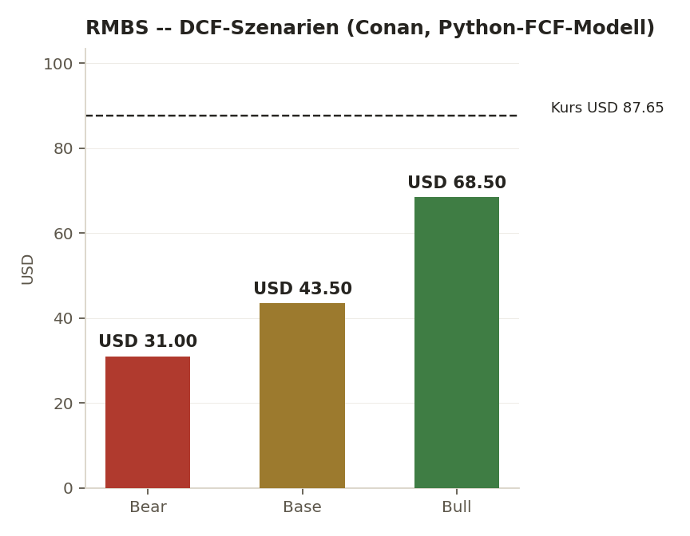
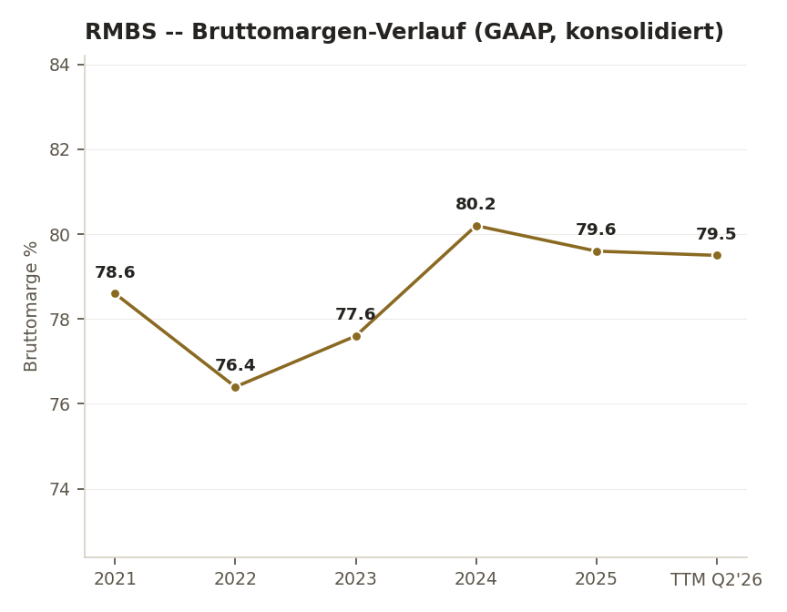
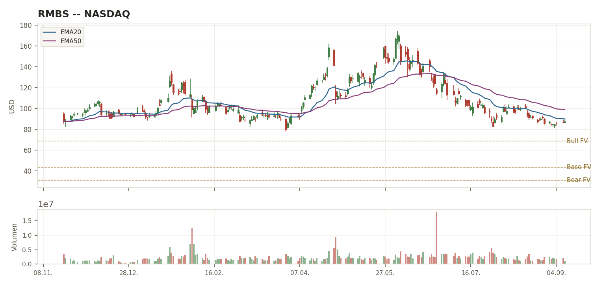
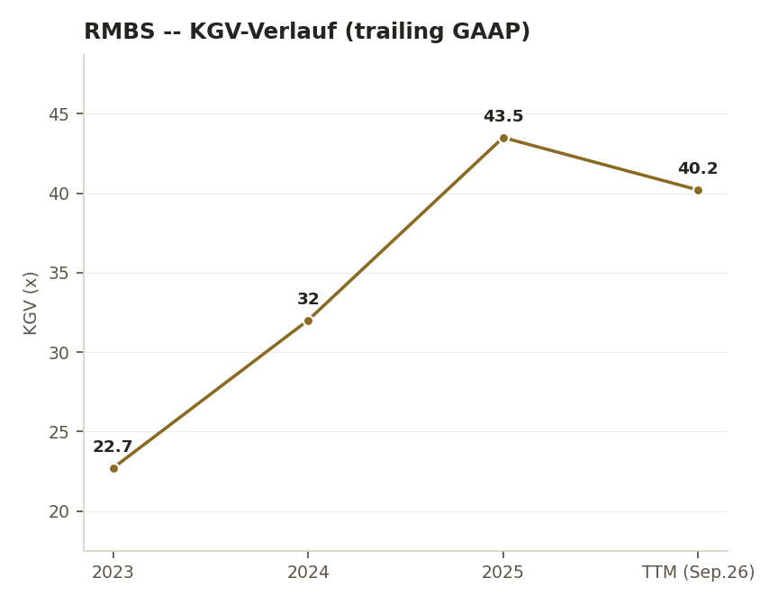

Das operative Geschäft. Rambus lieferte im Q2 2026 Rekordumsatz ($207,4 Mio., +20% YoY, +15% QoQ, über eigener Guidance) — getrieben von Memory-Interconnect-Chips (Rekord $99,2 Mio. Produktumsatz, +22%) und Royalties aus dem IP-Portfolio (2.010 Patente). Die Marge ist außergewöhnlich (Bruttomarge ~80%, Op.Margin ~35%), die Bilanz ist netto-cash. Ein $100-Mio.-Aktienrückkaufprogramm läuft seit August.
Der Kurs. Trotzdem ist die Aktie seit dem Juni-Hoch ($174,10) um ~50% eingebrochen. Beide KIs führten unabhängig ein DCF durch bzw. zitierten eines: Fair-Value-Schätzungen liegen bei $32-44 (Bear/Base), teils bis $68-69 (Bull) — deutlich unter dem aktuellen Kurs von ~$87. Der Markt bewertet Rambus offenbar weniger nach striktem DCF als nach einem AI-/HBM-Optionswert-Narrativ.
Das Risiko, das konkreter wurde. Conan fand harte 10-Q-Zahlen zur Kundenkonzentration: die größten zwei Kunden stehen für 38-40% des Umsatzes, bei Forderungen sogar 65%. Südkorea allein macht 45% des Q2-Umsatzes aus. Dazu: Lagerbestand +70% seit Jahresende 2025, operativer Cashflow im H1 2026 YoY rückläufig trotz Umsatzwachstums.
Der Cross-Check-Befund. Eine echte, unaufgelöste Divergenz beim Piotroski F-Score (Jack: 4/9 verfehlt, Conan: eigene Berechnung 7/9 erfüllt) — Details Seite 2.
Eine WebSearch-Anfrage lieferte erneut $104,69 — denselben Wert, der bereits einmal am selben Tag per Twelve Data als falsch korrigiert wurde ($87,20). Conan fand die Ursache: Yahoo Finance zeigt für RMBS einen Ask-Preis von $104,00 im Orderbuch — WebSearch-Zusammenfassungen verwechseln offenbar diesen Geldkurs mit dem tatsächlichen letzten Handelskurs. Beide KIs verifizierten unabhängig den echten Kurs: Jack $86,89 (Google Finance), Conan $87,65 (dediziertes Finance-Tool).
BEOBACHTEN
Kein Nachkauf bei $87 · Zone $68-75
NEUTRAL/LEICHT BULLISCH
Sizing Klein · Abstauber $70-75
HOLD/WATCH
Kein Nachkauf · Tranchen $68/$62/$55
Jack zitierte einen GuruFocus-Wert von 4,00 — ein klares Verfehlen der ≥7-Schwelle, sogar schlechter als die 5 aus der Schnellanalyse vom Vortag. Conan fand bei GuruFocus keinen exakten Score und berechnete stattdessen selbst ~7/9 — ein klarer Pass. Das ist keine Rundungsdifferenz, sondern ein K-Kriterium, das je nach Berechnungsweg zwischen "Sofort-Warnsignal" und "erfüllt" kippt. Aegis-Einordnung: ohne eine echte Zeile-für-Zeile-Nachrechnung aus dem 10-Q ist dies nicht abschließend auflösbar — der Widerspruch wird transparent dokumentiert statt stillschweigend einen Wert zu wählen. Tendenz zur vorsichtigeren Einschätzung (4/9), da Conans Wert selbst als "eigene Berechnung ohne exakte Zweitquellen-Bestätigung" gekennzeichnet war.
Jack führte selbst kein Python-DCF durch (Datengrundlage nach eigener Einschätzung nicht stabil genug), zitierte aber GuruFocus: Fair Value $39,97. Conan führte ein eigenes FCF-Discounted-Modell durch: Bear $31, Base $43-44, Bull $68-69. Jacks zitierter Wert liegt fast exakt zwischen Conans Bear und Base — eine echte methodische Konvergenz aus zwei unabhängigen Quellen/Ansätzen, kein Zufall. Beide liegen weit unter dem aktuellen Kurs von ~$87.
| Kriterium | Schwelle | Ist-Wert | Status |
|---|---|---|---|
| K-Kriterien (Gatekeeper) | |||
| ROIC | >20% | 30-36% (GuruFocus/eigene Berechnung, beide KIs konvergent) | ✅ Erfüllt |
| FCF-Marge (real) | ≥20% | TTM ~39,6% (beide KIs), Q2/H1 niedriger (23,6-31,9%) — Diskrepanz je Periode, beide vermerkt | ✅ Erfüllt, Trend ⚠ |
| Op. Leverage | Ja/Nein | Jack: kein klarer Beleg. Conan: Ja mehrjährig, nicht sauber in H1 2026 — Divergenz in der Interpretation derselben Daten | 🟡 Uneinig |
| Piotroski F-Score | ≥7 | Jack: 4/9 (GuruFocus) — Conan: 7/9 (eigene Berechnung) — ungelöste Divergenz, siehe Seite 2 | ⚠ Strittig |
| EPS-CAGR (5J) | ≥12% | 44,5% (beide KIs), methodisch verzerrt durch FY22-Verlustjahr | ✅ Formal erfüllt, Qualität niedrig |
| E-Kriterien | |||
| Bruttomarge | ≥60% | ~80% (Q2 2026, beide KIs konvergent) | ✅ Erfüllt |
| Op. Margin | ≥20% | 35-36% GAAP TTM/Q2 (beide KIs konvergent) | ✅ Erfüllt |
| Revenue-CAGR | ≥8-10% | 18-22,5% (5J, beide KIs) | ✅ Erfüllt |
| Net Debt/EBITDA | <2,0x | Netto-Cash-Position ($824,9 Mio. Cash+Securities, praktisch keine Schulden) | ✅ Erfüllt, sehr stark |
| Capex/Umsatz | ≤5% | H1/Q2 5,3-5,9% ❌ (beide KIs), TTM ~4,4% grenzwertig ✅ (Conan) — Momentaufnahme über Schwelle | ❌ Aktuelles Quartal verfehlt |
| CCC | <30 Tage | Nicht sauber ermittelbar (Lizenz-/Royalty-Mix verzerrt CCC methodisch), aber Lagerbestand +70% seit Jahresende 2025 als konkretes Warnsignal beider KIs | ❌ / Warnindikator |
DNA-Urteil: K 3-4/5 je nach Piotroski-Auflösung (echte Divergenz) · E 4/6. Kein sauberer Fall — die operative Substanz ist stark (Marge, Bilanz, Wachstum), aber Working-Capital-Qualität (Inventory, Capex, CCC) verschlechtert sich sichtbar, und ein Kern-K-Kriterium ist zwischen den KIs strittig.
| Jahr/TTM | Umsatz | Op.-Ergebnis | Nettogewinn | EPS verwässert | FCF |
|---|---|---|---|---|---|
| 2021 | 328,3 | 32,2 | 18,3 | 0,16 | 195,4 |
| 2022 | 454,8 | 80,1 | -14,3 | -0,13 | 212,9 |
| 2023 | 461,1 | 91,5 | 333,9* | 3,01* | 172,6 |
| 2024 | 556,6 | 179,0 | 179,8 | 1,65 | 199,9 |
| 2025 | 707,6 | 260,2 | 230,5 | 2,11 | 333,2 |
| TTM (Jun.'26) | 756,3 | 271,9 | 239,7 | 2,18 | 299,5 |
*2023-Nettogewinn durch Sondereffekte (Tax-/Asset-Sale-Effekte) verzerrt — nicht als normale Ertragsbasis verwendbar (Conan-Einordnung). 5J-Revenue-CAGR ~18-22,5% je Berechnungsbasis. TTM-FCF liegt unter dem FY2025-Wert trotz Umsatzwachstum — H1-2026-OCF war YoY rückläufig ($144,5 Mio. vs. $171,8 Mio.).
| Quartal | Guidance | Tatsächlich | Ergebnis |
|---|---|---|---|
| Q2 2026 | Umsatz $192-198 Mio. | $207,4 Mio. | 🟢 Klarer Beat |
| Q3 2026 (Ausblick) | Umsatz $210-216 Mio., Produktumsatz $110-116 Mio. | ausstehend | — |
Kurzfristiger Track Record gut (Beat + weiteres Wachstum geguided). Conan-Einordnung: Rambus gibt typischerweise nur kurzfristige Quartalsguidance, keine belastbare 3-5-Jahres-Prognose — Vorsicht vor zu viel Sicherheit aus dem Track Record. Score (Conan): 8/10.

Annahmen: TTM-FCF $299,5 Mio., Beta ~1,87, WACC 11-14% je Szenario, Terminal-Growth 2-3,5%. Selbst im Bull-Szenario liegt der Fair Value unter dem aktuellen Kurs. Jacks zitierter GuruFocus-Wert ($39,97) liegt fast exakt zwischen Bear und Base — unabhängige Konvergenz.

Kein Erosionsbild, eher Stabilisierung: Tief 76,4% (2022), seither Erholung auf ~79,5-80,2% (2024-TTM). Quelle: rambus.com GAAP-Pressemitteilungen (Conan), kreuzgeprüft mit stockanalysis.com (Jack) — für 2024/2025 exakte Übereinstimmung, für 2021-2023 Abweichung bis 3pp je Klassifizierungsmethode (nicht abschließend geklärt, hier: Company-eigene GAAP-Tabellen).
| Szenario | Fair Value | Δ vs. Kurs $87,65 |
|---|---|---|
| Bear | $31 | -64,6% |
| Base | $43,5 | -50,4% |
| Bull | $68,5 | -21,9% |
| Beta \ ERP | 4,3% | 4,6% | 4,9% |
|---|---|---|---|
| 1,67 | 11,98% | 12,48% | 12,98% |
| 1,87 (Basis) | 12,84% | 13,40% | 13,96% |
| 2,07 | 13,70% | 14,32% | 14,94% |
Bandbreite 11,98-14,94% deckt sich mit dem im DCF verwendeten WACC-Korridor 11-14% je Szenario — Unsicherheit liegt überwiegend in der Beta-Schätzung (Kursvolatilität), nicht im risikofreien Zins. Conans Reverse-DCF-Lesart bleibt gültig: selbst am unteren Ende der Zinssensitivität liegt der Bull-Bereich klar unter dem Kurs — der Markt preist RMBS eher als AI-/HBM-Optionswert als nach strengem CAPM-DCF.


Kursdaten: Twelve Data, Tagesbasis, 20.11.2025-09.09.2026. EMA20/EMA50 zur Trendeinordnung. Horizontale Linien markieren Conans DCF-Szenarien (Seite 5): Bear $31, Base $43,5, Bull $68,5 — der Kurs notiert seit Monaten deutlich über allen drei Zonen. KGV-Verlauf: Jahresschlusskurs ÷ GAAP-EPS je Jahr (Twelve Data + Company-Releases), 2021/2022 ausgelassen (EPS nahe null bzw. Verlustjahr, KGV nicht aussagekräftig). Beide Chart-Seiten konnten am 09.09.2026 wegen einer Twelve-Data-Verbindungsstörung nicht erstellt werden und wurden am 10.09.2026 nachträglich ergänzt.
Kein Nachkauf beim aktuellen Kurs $87 (beide KIs übereinstimmend). Bestehende 6-Aktien-Position als kleine Satellitenposition haltbar.
Patent-/Royalty-Moat: 2.010 Patente, 476 anhängige Anmeldungen. Royalties ~40% des Umsatzes, hochmargig und stabilisierend.
Produkt-Moat: Memory-Interconnect-Chips (49% des FY25-Umsatzes), steigender Chip-Content je Speicherplattform (DDR5/HBM/AI-Infrastruktur).
PHY-IP-Verkauf an Cadence (2023, $110 Mio.): beide KIs uneinig in der Gewichtung — Jack sieht es als "ambivalent, evtl. margenstärkend durch Fokussierung", Conan deutlich kritischer: "verengt TAM und technische Kontrolle über komplette Memory-Subsysteme, kein reiner Fokus-Pluspunkt, echtes Struktur-Risiko". Kein Monopol: Synopsys, Cadence, Alphawave als reale Wettbewerber im PHY/Controller-IP-Raum.
| Dimension | Score |
|---|---|
| Kapitalallokation (Netto-Cash, Buybacks) | 8/10 |
| Operative Ausführung (Rekordumsatz, Beat) | 8,5/10 |
| Transparenz (Kundennamen nicht offengelegt) | 6,5/10 |
| Shareholder Alignment (Buybacks ja, Insider-Käufe nein) | 5/10 |
| Strategische Klarheit (PHY-Verkauf ambivalent) | 7/10 |
Keine Dividende. $100-Mio.-Accelerated-Share-Repurchase (Mizuho) seit 05.08.2026. Historische Buybacks: ~$100 Mio./Jahr (2021-2023), $113 Mio. (2024), nur ~$7 Mio. (2025 vor dem neuen ASR) — deutliche Drosselung 2025, jetzt wieder aktiviert. Score (Conan): 7/10. Netto-Cash-Bilanz erlaubt Rückkäufe.
| Kennzahl | Wert |
|---|---|
| SBC-Quote FY2025 (SBC $54,3 Mio. / Umsatz $707,6 Mio.) | 7,67% |
| SBC-Quote TTM Q2'26 (SBC $56,0 Mio. / Umsatz $756,3 Mio.) | 7,40% |
| Verwässerung Diluted Shares (Q2'26 vs. Q2'25 YoY) | +1,34% |
Beide Schwellen (SBC >15% Umsatz ODER Verwässerung >2%/Jahr) klar unterschritten → Flag: nicht aktiv. SBC-Zahlen direkt per SEC-10-Q-Cashflow/Eigenkapitalveränderungsrechnung verifiziert (WebFetch-Gegenprobe gegen Conans Recherche, exakte Übereinstimmung H1 2026: $27,339 Mio.).
CFO-Wechsel: Sumeet Gagneja (SVP & CFO) seit 29.04.2026, Nachfolger von Interim-CFO John Allen (der wiederum auf den permanenten CFO Desmond Lynch folgte, Rücktritt 04.02.2026/wirksam 27.02.2026) — per SEC-8-K direkt verifiziert. Bei $825 Mio. Netto-Cash und null Schulden besteht laut Aegis-Einordnung ein latentes M&A-Kapitalallokations-Risiko (verwässernde Zukäufe statt organischem R&D/weiteren Buybacks) — kein akuter Befund, aber ein Beobachtungspunkt für den nächsten Cross-Check, insbesondere unter dem neuen CFO ohne eigenen Track Record bei Rambus.
HBM4E-Memory-Controller-IP (März 2026): bis 16 Gbps/Pin, 4,1 TB/s pro Device, aufbauend auf 100+ HBM-Design-Wins. Neuer Hyperscaler-Design-Win für HBM-Controller der nächsten Generation (Q2-Earnings-Call, Kunde nicht genannt, Umsatzbeitrag unbekannt) — Design-Wins sind nicht gleich Umsatz, mit Skepsis behandelt. Weitere Pipeline: DDR5-9600-Chipsets, PCIe-7.0-Switch-IP. Einordnung: die Story war beim Juni-Hoch ($174) bereits stark eingepreist — bei $87 weniger heiß, aber laut beiden DCF-Ansätzen immer noch nicht "billig".
Kundenkonzentration — konkret belegt aus dem 10-Q (Conans Fund): Customer A 22-25% des Umsatzes, Customer B 15-16%. Bei Forderungen sogar noch konzentrierter: Top-2-Kunden 65% der Accounts Receivable. Geografische Konzentration: Südkorea $93,7 Mio. von $207,4 Mio. Q2-Umsatz (45%) — das ist kein Nebenrisiko, sondern ein Kernrisiko dieser These. Wettbewerb: Synopsys, Cadence, Alphawave im IP-Raum, dazu interne IP-Teams großer Kunden. Geschäftsmodell-Verengung: PHY-IP-Verkauf an Cadence erhöht die Abhängigkeit von DDR5/HBM-Adoption und den verbleibenden Segmenten. Litigation-Reputation: historisch als "Patent Troll" bekannt (u.a. $306,5-Mio.-Urteil gegen SK Hynix) — kein aktueller Drain, aber ein latentes Kundenbeziehungsrisiko.
Fortgesetztes Verkaufsmuster: Director Charles Kissner verkaufte 5.000 Aktien am 07.08.2026 @ $100,92 (10b5-1-Plan, SEC-verifiziert). Weitere Verkäufe (u.a. Director Emiko Higashi, 10.000 Aktien im Juni 2026) bestätigen das Muster aus der Schnellanalyse (14 Verkäufe/101.730 Aktien in 6 Monaten). Keine Open-Market-Käufe gefunden — auch nicht nach dem ~50%-Kursrückgang. Einordnung: 10b5-1-Pläne sind nicht automatisch bearish, aber das Fehlen jeglicher Gegenkäufe nach einem derart großen Rückgang ist kein Vertrauenssignal. Gegenläufig: das $100-Mio.-Unternehmens-Buyback zeigt, dass die Firma selbst bei diesem Kursniveau kauft.
| Jack | Conan | DCF Base | Nächster Trigger |
| Neutral | Hold/Watch | $32-44 | Q3 2026 |
Rambus bleibt Kategorie Profi. Rating wird von BEOBACHTEN (Schnellanalyse 08.09.) auf BEOBACHTEN bestätigt — jetzt mit vollständigem 3-fach-Cross-Check statt nur Jack+Aegis. Die bestehende 6-Aktien-Position (Ø-Einstand $88,94, aktuell ca. -2%) wird gehalten, kein Nachkauf beim aktuellen Kurs. Abstauber-Zone von $75 (Schnellanalyse) auf $68-75 präzisiert (Überschneidung beider KI-Einschätzungen). Nächster Pflicht-Prüfpunkt: Q3-2026-Zahlen (02.11.2026).
Anders als bei HAWK (echte Konvergenz) liefert dieser Deep Dive eine echte, unaufgelöste Kennzahlen-Divergenz zwischen zwei KIs auf Basis derselben öffentlichen Daten. Das unterstreicht: selbst mit der neuen Kennzahlen-Recherche-Pflicht (benannter Suchversuch vor jedem Tag) bleiben komplexe, mehrteilige Kennzahlen wie der Piotroski-F-Score anfällig für unterschiedliche Berechnungswege. Eine endgültige Auflösung würde eine eigene Zeile-für-Zeile-Nachrechnung aus dem 10-Q erfordern — als offener Punkt für den nächsten Cross-Check vermerkt.